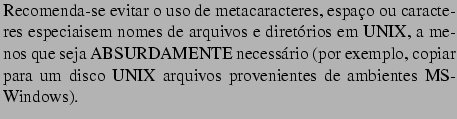

Prof. Armando Luiz N. Delgado
Ao se digitar ao final de uma linha de comando, o shell primeiramente expande os metacaracteres que existirem na linha de comando e trata os redirecionamentos de Entrada e Saída (que serão vistos em aulas posteriores) ANTES de efetivamente providenciar a execução do comando.
Considere como exemplo que em seu diretório corrente existem os arquivos teste.txt, memorando.txt e prog1.c, e que você executa a linha de comando abaixo:
ls -l *.txt *.[cp]
Quando o shell analisa a linha de comando, os metacaracteres
são tratados e expandidos pelo shell ANTES de excecutar o
comando, de forma que a linha de comando EFETIVAMENTE executada é:
ls -l teste.txt memorando.txt prog1.c
Como outro exemplo, considere que o diretório ~/Aulas contém os arquivos assoc.c e atrib.doc, e também o sub-diretório autores e que você deseja executar o comando abaixo:
find ~/Aulas -name a* -print
Ao analisar a linha de comando acima, o shell expande os
metacaracteres, e a linha de comando EFETIVAMENTE executada é:
find ~/Aulas -name atrib.doc assoc.c autores -print
Isto fará com que find(1) acuse um erro, pois para este comando
assoc.c e autores não são argumentos da opção
-name, mas diretórios por onde procurar arquivos. No comando
find(1), os diretórios por onde é feita a busca de arquivos
devem vir SEMPRE ANTES de quaisquer opções do comando, sejam ações ou
critérios de busca).
Assim, pode ser eventualmente necessário que se impeça o shell de expandir metacaracteres em uma linha de comando. Linhas de comando que envolvam find(1) e grep(1) são os casos mais comuns desta necessidade.
Quando o usuário NÃO deseja que estes metacaracteres sejam interpretados e substituídos pelo shell, os strings em que ocorrem devem ser delimitados por apóstrofes (´) ou por aspas (¨). A diferença entre usar aspas ou apóstrofes ficará mais clara quando for visto o conceito de VARIÁVEIS DE AMBIENTE. Por enquanto, recomanda-se o uso de aspas (¨).
Por este motivo, em comandos como find(1) e grep(1), os argumentos em que aparecem metacaracteres devem ser delimitados por apóstrofes ou aspas, com o risco de ocorrer erro na execução caso isto não seja cuidadosamente observado.
Uma outra forma de impedir a expansão de um metacaracter é precedê-lo por uma contra-barra (). Isto é muito comum quando se deseja criar ou acessar um arquivo cujo nome tem como parte integrante do nome metacaracteres ou caracteres especiais do shell (tais como * [] # () ? {}) ou mesmo espaço:
cp teste.txt meu\ diario.txt
ls \#\*
rm "meu diario.txt"
De um modo geral, se um argumento qualquer de comando é um string que deva conter um espaço, metacaracter ou caracteres especiais, este argumento deve estar delimitado por aspas (preferencialmente) ou apóstrofes:
cp prog1.p "Arquivos de Programas/prog_2.p"
Se aspas ou apótrofe devem constar em um string como tal, eles
devem ser precedidos de contra-barra ( ):
):
echo "Meu diretório de login é \"$HOME\"."
ATENÇÃO: 
Ao terminar um shell de login, executa os comandos em ~/.bash_logout
Por default, toda janela de shell executa um shell interativo, o que quer dizer que os comandos no arquivo ~/.bashrc são executados toda vez que uma janela de shell é aberta.
alias <nome>="comando opcoes"
Por exemplo:
alias ll="ls -la"
alias rm="rm -i"
alias cp="cp -i"
Uma vez executados os comandos acima, quando o usuário executar, por
exemplo, rm, ele estará executando na verdade
rm -i.
O comando alias executado sem argumentos mostra todos os aliases já definidos na sessão shell corrente.
O comando alias tendo como argumento um nome simples (sem a atribuição) mostra a definição alias com aquele nome ou uma mensagem de erro se não existir um alias associado ao argumento. Por exemplo, alias ll mostra como resultado alias ll="ls -la". Por outro lado, alias lk mostra como resultado bash: alias: `lk' not found.
O comando unalias remove a definição do alias. Considerando os exemplos acima, ao executar unalias rm, qualquer execução posterior de rm terá o comportamento normal (e.g., a ausência da opção -i).
PS1="<formato>"
onde <formato> contém o string e eventualmente
alguns caracteres especiais. Por exemplo, ao se definir o valor para
PS1 na forma abaixo
PS1="\h:\u [\#] > "
o prompt será do tipo dupond:ci066 [12] > .
Note-se que Outros caracteres especiais podem ser encontrados no manual on-line de bash(1), na Seção PROMPTING.
Outras variáveis de prompt existem: PS2, PS3 e PS4. Dirija-se oa manual on-line de bash(1) para saber mais sobre seus objetivos e formas de definição.
Em qualquer shell (bash, sh, ksh, etc.) é possível definir VARIÁVEIS, da mesma forma que se define variáveis em programas. De um modo geral, estas variáveis são usadas pelo shell e por outros programas para configurar o ambiente do usuário e determinados comportamentos de programas.
Variáveis em shell são por definição nomes aos quais se associam valores. Para se definir uma variável em shell usa-se a seguinte sintaxe:
<nome_variavel>=<valor>
EDITOR=emacs
PRINTER="salaminho"
PATH="/usr/bin:/bin:/usr/local/bin"
LAB_DIR="~/LabNum2"
ATENÇÃO, pois não há ESPAÇOS EM BRANCO antes ou depois do sinal de atribuição =.
Por convenção, nomes de variáveis pré-definidas pelo shell e/ou usadas por outros programas são escritas sempre em maiúsculas.
Para recuperar ou referenciar o valor de uma variável em uma linha de comando, deve-se utilizar o símbolo $ antes do nome da variável:
ci066@dupond:~$ echo $EDITOR
emacs
ci066@dupond:~$ find $LAB_DIR -name *-8-exec ls -l {}  ;
;
....
ci066@dupond:~$ VISUAL=$EDITOR
Para se remover a definição de uma variável usa-se o comando unset:
ci066@dupond:~$ echo $EDITOR
emacs
ci066@dupond:~$ unset EDITOR
ci066@dupond:~$ echo $EDITOR
ci066@dupond:~$
Em shell, algumas variáveis de ambiente possuem um significado especial:
Estas variáveis, por serem usadas por outros programas, devem ser definidas de forma especial:
export EDITOR=emacs
VISUAL="$EDITOR"
MAIL="$HOME/Mail/Mailbox"
export MAIL VISUAL
Por exemplo:
PATH="/bin:/usr/bin:/usr/X11/bin:/usr/local/bin"
Assim, na definição acima, está-se definindo que ao se digitar um comando, ele será procurado primeiro no diretório /bin. Se o arquivo correspondente ao comando não for encontrado, o shell procurará no diretório seguinte da lista (no caso, /usr/bin) e assim sucessivamente, até achar o programa. Quando o shell não encontra o programa em nenhum dos diretórios de PATH, é exibida uma mensagem de erro indicando que o comando não foi encontrado (command not found).
Em geral, sugere-se que o usuário altere o valor de PATH da seguinte forma:
PATH="${PATH}:dir1:dir2:...:dirn"
onde dir1, dir2, etc, são os novos diretórios por
onde o usuário que o shell procure comandos. O elemento
$PATH faz com que se ACRESCENTE ao valor de PATH
os novos diretórios.